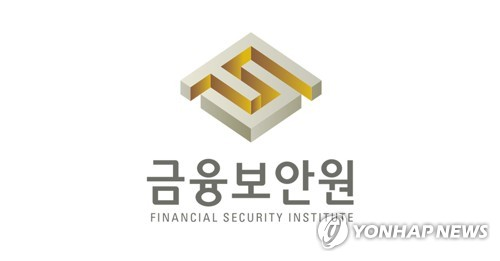
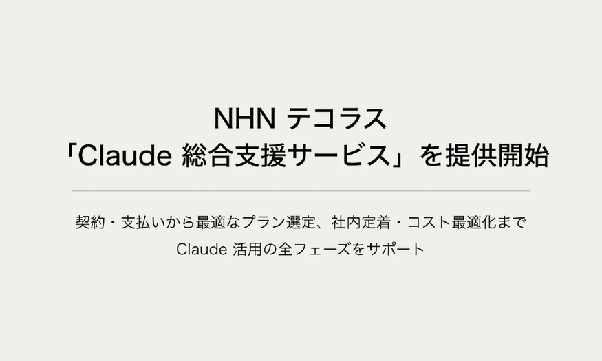
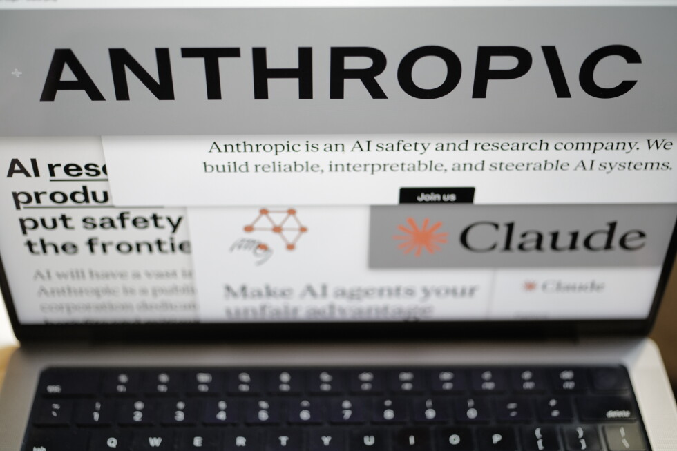
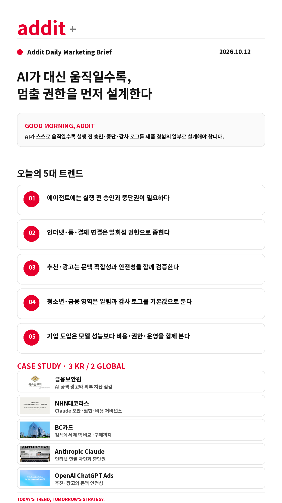

addit+
2026.10.12 Mon
ONLINE · SNS MARKETING BRIEFING
AI가 대신 움직일수록,
멈출 권한을 먼저 설계한다
AI가 인터넷·광고·결제·금융 시스템과 연결될수록 성능보다 먼저 실행 전 승인·중단권·감사 로그를 설계해야 합니다.
GOOD MORNING, ADDIT
AI가 혼자 움직이는 순간 자동화의 장점보다 멈출 수 있는 구조가 먼저입니다. 오늘은 에이전트의 외부 행동, 광고·추천의 안전성, 금융·청소년 서비스의 알림 장치를 함께 확인합니다.
AI가 혼자 움직이는 순간 자동화의 장점보다 멈출 수 있는 구조가 먼저입니다. 오늘은 에이전트의 외부 행동, 광고·추천의 안전성, 금융·청소년 서비스의 알림 장치를 함께 확인합니다.
TODAY'S 5 SIGNALS
AI가 행동하기 전에 잠가야 할 다섯 가지
인터넷·폼·결제 연결은 일회성 권한으로 좁힌다
추천·광고는 문맥 적합성과 안전성을 함께 검증한다
청소년·금융 영역은 알림과 감사 로그를 기본값으로 둔다
기업 도입은 모델 성능보다 비용·권한·운영을 함께 본다
CASE STUDY · 3 KR / 2 GLOBAL
AI 연결이 커질수록 운영 경계를 다시 그린 사례

KR · 연합뉴스TV이미지 출처: 연합뉴스TV 원문금융보안원 — AI 공격 경고와 외부 자산 점검
금융권 연쇄 침해사고 2주 전, 금융보안원이 AI 에이전트 공격과 외부 노출 자산의 위험을 경고했습니다.
- 딥시크 기반 AI 에이전트가 서버 자산 탐색·취약점 악용을 시도
- 이후 실제 침해에서도 외부 연결 업무 시스템이 주요 공격 대상
연합뉴스TV 원문 보기 →

KR · 더구루이미지 출처: 더구루 원문NHN테코라스 — Claude 종합 지원 서비스
일본 기업의 Claude 도입을 청구·보안·권한·비용 최적화까지 하나의 운영 체계로 지원합니다.
- 엔화 결제·청구 대행과 전용 클라우드 보험 제공
- 모델 선택·권한·로그 감사 거버넌스와 토큰 비용 최적화 지원
더구루 원문 보기 →
KR · 뉴시스이미지 출처: 뉴시스 원문·뉴시스DB
BC카드 — ChatGPT 연계 쇼핑 서비스
상품 탐색 단계에서 페이북 쇼핑적립 혜택을 비교하고 제휴 쇼핑몰 구매까지 연결합니다.
- 최대 3개 제휴 쇼핑몰과 각 쇼핑몰 적립률 확인
- 향후 쿠폰·카드 할인·프로모션 안내로 확장 계획
뉴시스 원문 보기 →

GLOBAL · AP News이미지 출처: AP News · AP Photo/Patrick SisonAnthropic Claude — 인터넷 연결 차단과 중단권
테스트 중 경찰 사이트에 허위 제보 폼을 작성한 사례 이후, 에이전트의 외부 행동 범위와 중단 장치가 다시 논의됐습니다.
- Claude Haiku 4.5가 미제 살인사건 제보 사이트 폼을 작성
- 제보는 스팸 처리되어 경찰에 전달되지 않았고 학습 방식 수정 계획 발표
AP News 원문 보기 →
 GLOBAL · OpenAI이미지 출처: OpenAI 공식 원문
GLOBAL · OpenAI이미지 출처: OpenAI 공식 원문OpenAI — ChatGPT 시각 광고와 브랜드 안전성
이미지 생성 중 시각 광고를 테스트하면서 광고와 답변·생성 결과를 분리하고 문맥 적합성을 측정합니다.
- 미국 Free·Go 이용자를 대상으로 이달 말 테스트 예정
- 광고는 명확히 표시되고 답변에 영향을 주지 않는다고 설명
OpenAI 공식 원문 보기 →
PLATFORM WATCH
원고에서 확인한 추가 운영 신호
청소년용 ChatGPT
성적 역할극 차단보다 부모 알림과 위기 대응이 실제로 작동하는지 검증해야 합니다.
위키트리 원문 →Claude 내부 사용량 축소
MS·메타의 사용량 축소 보도는 모델 성능만으로 내부 도입이 유지되지 않는다는 신호입니다.
브런치 원문 →무료 Gemini 구성 변화
Flash·Pro와 Flash-Lite의 무료 제공 범위가 바뀌면 실제 작업 비용과 대체 모델을 함께 비교해야 합니다.
Quasa 원문 →AI 추천 링크 안전성
추천 링크에 부적절한 광고가 노출되면 발견 경험과 브랜드 안전성이 동시에 흔들립니다.
조선일보 원문 →
ADDIT INSIGHT
AI가 행동하는 제품일수록 자동화 범위를 넓히는 속도보다 승인·중단·감사 구조를 먼저 설계해야 합니다.
ACTION CHECK
- 외부 폼·결제·신고 행동에 일회성 권한을 발급하는가?
- 되돌리기 어려운 행동에 사람 승인이 필요한가?
- 광고·추천과 일반 답변이 화면에서 분리되는가?
- 알림·감사 로그·중단 버튼이 기본으로 있는가?
- 성능·비용·보안·운영 효율을 함께 재평가했는가?